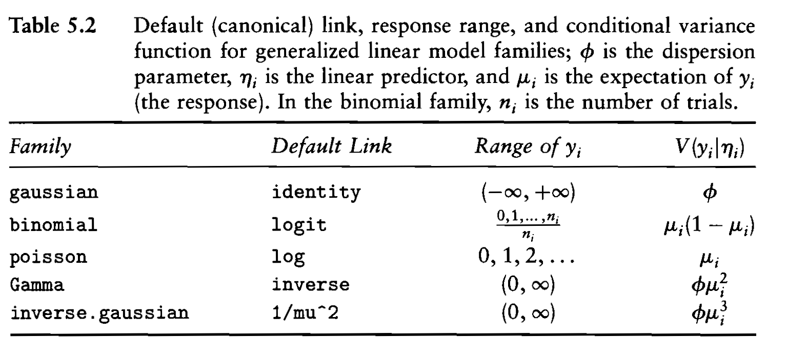
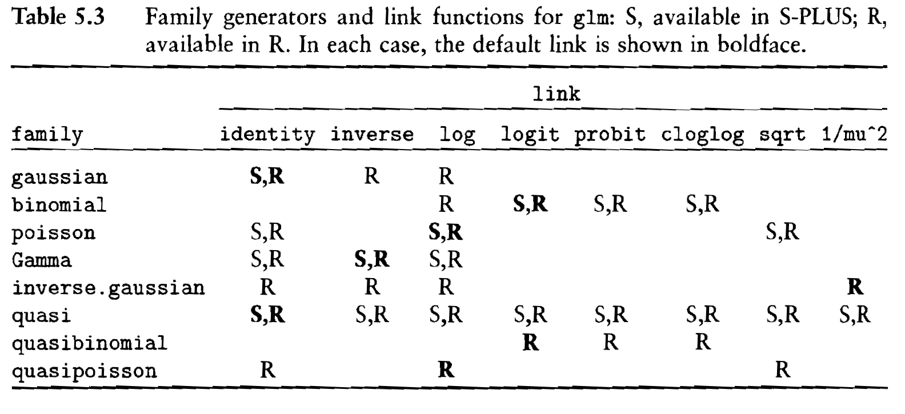

Week12: Overview - The Generalized Linear Model
1 Generalized Linear Models
The family of generalized linear models (GLM) encompasses several regression models, which are all based on the exponential distribution family.
These models are specified by implementing a linear predictor \(\eta_i = \mathbf{x}_i^T \cdot \boldsymbol{\beta}\) in either metric or categorical variables, or a combination thereof, that is linked by a function to the expected value of the dependent variable: \(link\left(\underbrace{E(y)}_{\theta}\right) = \eta\).
GLM’s flexibility, while using one unified estimation procedure, makes it a very appealing model class.
Several extensions are available that allow relaxing some underlying assumptions of GLM.
2 The Exponential Family (not test relevant)
- The general structure of a distribution function from the exponential family is
\[f(y; \theta, \phi) = \exp\left(\frac{y \cdot \theta - b(\theta)}{a(\phi)} + c(y, \phi)\right)\]
with \(\theta\) being a location parameter, such as the expected value \(\underline{E(y) = \theta}\), and \(\phi\) being a scale parameter.
Many distribution functions, such as the normal, the exponential, the binomial, the Gamma and the Poisson distribution are members of the exponential family and thus can be estimated with the GLM approach.
The linear predictor \(\eta_i = \mathbf{x}_i^T \cdot \boldsymbol{\beta}\) and the expected value \(\theta_i\) are connected through a link function \(link(\theta_i) = \eta_i\). For example, for binary logistic model the link function becomes the logit \(\log\left(\frac{\pi_i}{1-\pi_i}\right) = \eta_i\) with \(\theta_i \equiv \pi_i\).

- For the Poisson distribution we get the specification as a member of the exponential distribution as
\[f(y; \mu) = \frac{\exp(-\mu) \cdot \mu^y}{y!} = \exp\left[y \cdot \ln \mu - \mu - \ln(y!)\right]\]
with
\[\theta = \ln \mu,\]
\[b(\theta) = \mu \Leftrightarrow b(\theta) = \exp(\theta),\]
\[c(y, \phi) = -\ln(y!) \quad \text{and}\]
\[a(\phi) = 1.\]
Thus, the location parameter is \(\mu\) and the scale parameter is constant \(\phi = 1\).
- A generic maximum likelihood estimation procedure exists for all members of the exponential family. An alternative estimation procedure is the iteratively reweighted regression algorithm.
3 Likelihood and Iteratively Reweighted Regression for the Poisson Distribution (not test relevant)
Let \(\mu_i = \exp(\mathbf{x}_i^T \cdot \boldsymbol{\beta})\) with \(E(y_i) = \mu_i\) and \(Var(y_i) = \mu_i\) according to the Poisson distribution.
That means the variance of the Poisson distribution is restricted to be equal to its expectation: \(E(Y_i) = Var(Y_i) = \mu_i\).
By making use of the exponential family specification, the log-likelihood function becomes
\[\ln L(\boldsymbol{\beta}; \mathbf{y}) = \ln\left(\prod_{i=1}^{n} \exp\left[y_i \cdot \ln \mu_i - \mu_i - \ln(y_i!)\right]\right)\]
\[= \sum_{i=1}^{n} \left[ y_i \cdot \underbrace{\left(\mathbf{x}_i^T \cdot \boldsymbol{\beta}\right)}_{=\ln \exp(\mathbf{x}_i^T \cdot \boldsymbol{\beta})} - \exp\left(\mathbf{x}_i^T \cdot \boldsymbol{\beta}\right) - \ln(y_i!) \right]\]
- The first derivatives are
\[\frac{\partial \ln L(\boldsymbol{\beta}; \mathbf{y})}{\partial \boldsymbol{\beta}} = \sum_{i=1}^{n} \left[ y_i \cdot \mathbf{x}_i^T - \exp(\mathbf{x}_i^T \cdot \boldsymbol{\beta}) \cdot \mathbf{x}_i^T \right]\]
- Evaluate the derivatives of the log-likelihood function at the optimum (i.e., derivative equal to zero) gets a system of nonlinear equations
\[\sum_{i=1}^{n} \left[ y_i - \underbrace{\exp(\mathbf{x}_i^T \cdot \boldsymbol{\beta})}_{\hat{\mu}_i} \right] \cdot \mathbf{x}_i^T \quad \Leftrightarrow \quad \mathbf{X}^T \cdot \left[ \mathbf{y} - \underbrace{\exp(\mathbf{X} \cdot \boldsymbol{\beta})}_{\hat{\boldsymbol{\mu}}} \right]\]
Similar constraints were observed for the OLS model and the logistic regression model, which lead to unbiased predictions.
Note: This constraint does not hold, however, to the negative binomial model. Thus, its predictions are biased.
- Alternatively, the maximization problem can be specified as weighted regression where, for the Poisson distribution, we minimize the weighted sum of squares \(S_{\chi^2}\) with
\[S_{\chi^2} = \sum_{i=1}^{n} \frac{(y_i - \mu_i)^2}{\mu_i}\]
The weight here is the inverse of the expected variances: \(1/\mu_i\)
- The first derivative gives
\[\frac{\partial S_{\chi^2}}{\partial \boldsymbol{\beta}} = 2 \cdot \sum_{i=1}^{n} \frac{\left[y_i - \exp(\mathbf{x}_i^T \cdot \boldsymbol{\beta})\right] \cdot \exp(\mathbf{x}_i^T \cdot \boldsymbol{\beta}) \cdot \mathbf{x}_i^T}{\exp(\mathbf{x}_i^T \cdot \boldsymbol{\beta})}\]
\[= 2 \cdot \sum_{i=1}^{n} \left[y_i - \exp(\mathbf{x}_i^T \cdot \boldsymbol{\beta})\right] \cdot \mathbf{x}_i^T\]
This is equivalent to the maximum likelihood estimator.
Note: use has been made of the quotient rule of differentiation:
\[\frac{\partial}{\partial x} \frac{f(x)}{g(x)} = \frac{1}{g(x)} \frac{\partial f(x)}{\partial x} - \frac{f(x)}{g^2(x)} \frac{\partial g(x)}{\partial x}.\]
- See Fox & Weisberg section 5.12 for the specification of the iteratively reweighted least squares algorithm as a first order Taylor Series expansion.
4 Specification Decisions for GLM
First, one needs to decide how the dependent (response) variable \(y_i\) is distributed. Its distribution should come from the exponential family. This defines the likelihood function to be used.
For example:
[a] count data \(y \in \{0, 1, 2, \ldots\}\) without an upper ceiling follow a Poisson distribution
[b] binary \(y \in \{0, 1\}\) realizations follow a binary distribution,
[c] whereas counts within a fixed range \(y \in \{0, 1, \ldots, n\}\) follow a binomial distribution.
[d] For \(0 \leq y < \infty\) and being continuous, the gamma distribution can be used with a link function being \(\frac{1}{\theta_i} = \eta_i\).


For most members of the exponential family, their scale depends on the location parameter and cannot vary freely.
This is a restrictive property of these distributions, which however can be relaxed through a quasi-likelihood specification by allowing for over- or underdispersion of the variances.
However, as the term “quasi-likelihood” implies the likelihood becomes undefined.
Quasi likelihood estimators retain the estimated parameters but their standard errors change depending on whether there is over- or under-dispersion.
Second, one needs to decide how the expectations \(\theta_i\) of the individual observations \(y_i\) are linked to their linear predictor \(\eta_i\).
The limits of the link function need to ensure that the expectation \(\theta = E(y)\) remains within the feasible range of the underlying distribution. E.g.: \(\pi \in [0, 1]\) for the logistic and probit regression and \(\mu > 0\) for Poisson regression.
The literature usually expresses the linear predictor by \(\eta_i = \mathbf{x}_i^T \cdot \boldsymbol{\beta}\) and connects the expectation \(E[y_i] = \theta_i\) to \(\eta_i\) with a link function
\[link\left(\underbrace{E[y_i]}_{=\theta_i}\right) = \eta_i \quad \text{with} \quad \eta_i = \mathbf{x}_i^T \cdot \boldsymbol{\beta}\]
For the Poisson model it is \(\log(\mu_i) = \eta_i = \mathbf{x}_i^T \cdot \boldsymbol{\beta}\) and for logistic regression it is \(\text{logit}(\pi_i) = \log\left(\frac{\pi_i}{1-\pi_i}\right) = \eta_i\).

- The inverse link function is an expression in terms of the expectation
\[\mu_i = E[y_i] = link^{-1}(\eta_i).\]
For logistic regression it becomes the inverse logit function and for Poisson regression it is the exponential function.
At this point one may wonder how the link function differs from applying a transformation on the dependent variable (e.g., the Box-Cox transformation)?
The quick answer is that the link function actually transforms the expected value \(link(E[y_i])\) of the dependent variable and not on the dependent variable \(y_i\) itself.
5 Extension 1: Quasi-Likelihood and Over- and Under-dispersion
The scale parameter \(\phi\) in logistic and Poisson regression is equal to 1 due to the properties of the underlying distributions.
However, the estimated variance of the response variable may not satisfy the constraint \(Var(y_i) = E(y_i)\) for the Poisson model and \(Var(y_i) = \frac{\pi_i \cdot (1-\pi_i)}{n_i}\) with \(E(y_i) = \pi_i\) for the binomial model.
Potential reasons for observing excess dispersion are:
For the logistic model: Due to missing information the true predicted expectation may vary within grouped observations (i.e., lack of independence), even though they are identically in their observed exogenous variables. This is a classic case of model misspecification.
For Poisson regression: GLM assumes independence among the observations constituting the counts. It may however happen that the aggregated counts over time and/or space in one observation \(y_i\) are correlated with other counts.
For instance, the number of persons migrating is most likely correlated because we count family members as if they move independently whereas they move jointly as a “clan”.
An incorrect assumption about the distributional model.
The choice of the link function is incorrect.
There are outliers or extreme observations in the data.
Under- and over-dispersion may lead to poorly fitting models.
The estimated regression coefficients remain unbiased, however, their standard error comes incorrect, which prohibits us from assessing their statistical significance correctly (recall OLS estimates under heteroscedasticity or autocorrelation).
Quasi-Poisson and Quasi-Binomial GLM regression adjust the standard errors properly and allows to estimate the dispersion parameter \(\phi\) other than being equal to 1.
A dispersion parameter \(\phi > 1\) indicates the presences of over-dispersion whereas \(\phi < 1\) indicates under-dispersion.
The dispersion parameter is the ratio of the empirical \(\chi^2\)-value of the model’s squared Pearson residuals and its expectation \(E\left(\chi^2\right) = df\), which is the degrees of freedom of the model.
6 Extension 2: Negative Binomial Model
Another approach of dealing with over-dispersion in a Poisson model is to switch to a negative binomial distribution. The function
glm.nbin theMASSlibrary allows estimating these models.Unfortunately, the negative binomial model may lead to biased predicted values.
See Fox & Weisberg (2nd edition) pp 278-281 for a discussion and examples.
7 Extension 3: The Offset Term in Poisson Regression
Sometimes an a priori baseline expectation \(E(y_i | H_0)\) is available for the response variable and we are interested in how the exogenous variables influence the variation of the individual expectations \(\mu_i\) around this baseline expectations.
- For example: In migration studies the observed flow \(m_{ij}\) between two regions \(i\) and \(j\) is modeled by a set of origin and destination characteristics and their intervening distance. One can expect that the current migration flow \(m_{ij}^t\) does not differ much from the flow of the previous period \(m_{ij}^{t-1}\). Therefore, \(m_{ij}^{t-1}\) can function as baseline expectation.
For a Poisson regression model one could think of defining a new dependent variable as \(\mu_i / E(y_i | H_0)\) and start modeling the ratio
\[\log\left(\mu_i / E[y_i | H_0]\right) = \eta_i \Leftrightarrow \log(\mu_i) - \log(E[y_i | H_0]) = \eta_i.\]
However, the distribution of \(\log(\mu_i) - \log(E[y_i | H_0])\) is usually not known or does not belong to the exponential family.
Therefore, one can combine the baseline expectation with a fixed regression coefficient equal to one with the linear predictor \(\eta_i\) because both are given exogenously.
This leads to the offset specification of the Poisson regression model
\[\log(\mu_i) = \eta_i + \underbrace{1}_{fixed} \cdot \log(E[y_i | H_0])\]
- The term \(\log(E[y_i | H_0])\) is called the offset. It needs to be given in its proper log-format for the Poisson regression model.
8 Special GLM Models
8.1 The Multinomial Logistic Model
- See Fox & Weisberg (3rd edition) pp 309-314, and p 319
8.2 The Proportional Odds model for Ordered Response Variables
- See Fox & Weisberg (3rd edition) pp 317-322
8.3 The Log-Linear Model for Multidimensional Contingency Tables
See Fox & Weisberg (3rd edition) pp 301-307 for examples and discussion.
The Iterative Proportional Fit algorithm can be used to generate predicted tables that satisfy the constraints of [a] externally give marginal counts and [b] of having a given a priori interdependence structure among the factors. The resulting table will satisfy both constraints.
8.4 Zero Inflated Poisson Regression
One needs to distinguish random zero form structural zeros in the Poisson model.
Random zero: one could have observed a count other than zero, so an observed zero is just a chance realization of the underlying random process.
Structural zero: It is impossible to observe a particular cell count on logical grounds, but they appear in the dataset as zeros.
Thus, records associated with structural zeros need to be excluded from the analysis. They are not members of the underlying population from which a sample has been taken.
If the data has more random zeros than expected based on the underlying probability model then a zero inflated Poisson regression model can be selected.
It uses a mixture distribution approach to model the random zeros:
- the first component distribution models the probability for observing a zero count and
- the second component distribution models the probability of observing a truncated Poisson distributed count ranging from \(y \in \{1, 2, \ldots\}\), i.e., a Poisson distribution without zeros.
See the R function
zeroinflin the packagepsclfor estimation details.
9 Example: Basic Disease Modeling
Logistic Regression:
Let \(x_i\) be and observed disease count (either age-standardized or unstandardized), which is related to a population at risk \(N_i\).
Then \(x_i\) follows a binomial distribution with
\[\Pr(X_i = x_i) = \frac{N_i!}{x_i! \cdot (N_i - x_i)!} \cdot \pi_i^{x_i} \cdot (1-\pi_i)^{(N_i - x_i)}\]
instead of a binary distribution.
- To model the observed disease rate \(r_i = \frac{x_i}{N_i}\) the
glmfunction for logistic regression needs to know what the given population at risk is in order to model the variance \(\frac{\pi_i \cdot (1-\pi_i)}{N_i}\) of each observation properly. This is achieved with the statementglm(r~., weights=N, family=binomial)where \(\mathbf{r} = (r_1, \ldots, r_n)^T\) and \(\mathbf{N} = (N_1, \ldots, N_n)^T\).
Poisson Regression:
For rare diseases, that is, \(\pi_i \cong 0\), the binomial distribution can be approximated by the Poisson distribution.
To account for the varying population at risk sizes, one focuses on the standardized mortality ratios \(SMR_i = \frac{x_i}{e_i}\), where \(e_i\) is the expected count based on indirect epidemiological standardization.
The Poisson regression internally models the expected value of the observed counts with a log-link function.
Since the expected counts \(e_i\) are assumed to be deterministic, the expression becomes for the standardized mortality ratios \(\log(E(SMR_i)) = \log(E(x_i)) - \log(e_i)\).
The expression for Poisson regression of observed disease counts adjusted by the expected counts becomes
glm(x~., offset(log(e)), family=poisson)where the log-transformed vector of expected counts \(\mathbf{e} = (e_1, \ldots, e_n)^T\) is brought in as log-transformed offset to the right-hand side of the equation.Offsets have a fixed regression coefficient of one.
10 Example: The Rudimentary Spatial Interaction Model
- Let the expected flow between an origin \(i\) to a destination \(j\) be specified as
\[E(m_{ij}) = \mu_{ij} = \beta_0 \cdot \frac{p_i^{\beta_1} \cdot p_j^{\beta_2}}{d_{ij}^{\beta_3}}\]
where \(m_{ij}\) is the observed flow between origin \(i\) and destination \(j\), \(p_i\) is an origin characteristic (such as the origin population) and \(p_j\) a destination attribute (such as the destination population) and \(d_{ij}\) a measure of separation between \(i\) and \(j\).
The dependent variable \(m_{ij}\) is a count ranging from \(m_{ij} \in \{0, 1, 2, \ldots, \infty\}\).
Therefore, the assumption \(m_{ij} \sim Poisson(\mu_{ij} | p_i, p_j, d_{ij})\) is appropriate.
The link function \(\ln(\mu_{ij}) = \eta_{ij}\) allows modeling the observed flows with
\[\eta_{ij} = \ln(\beta_0) + \beta_1 \cdot \ln(p_i) + \beta_2 \cdot \ln(p_j) - \beta_3 \cdot \ln(d_{ij})\]
by a Poisson regression model.